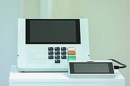

Gráficos
A urna eletrônica brasileira é um microcomputador para coleta e apuração de votos da primeira geração, do tipo DRE (de Direct Recording Electronic voting machine), caracterizada pela gravação eletrônica direta sem impressão do voto para conferência do eleitor.
Este tipo DRE de máquinas de votar não atende ao princípio da independência do software em sistemas eleitorais e, por esse motivo, foi descredenciado pela norma técnica para equipamentos eleitorais "Voluntary Voting System Guidelines",[16] que são diretrizes técnicas elaboradas pelo órgãos federais norte-americanos Election Assistance Commission (EAC) e National Institute of Standards and Technology (NIST).